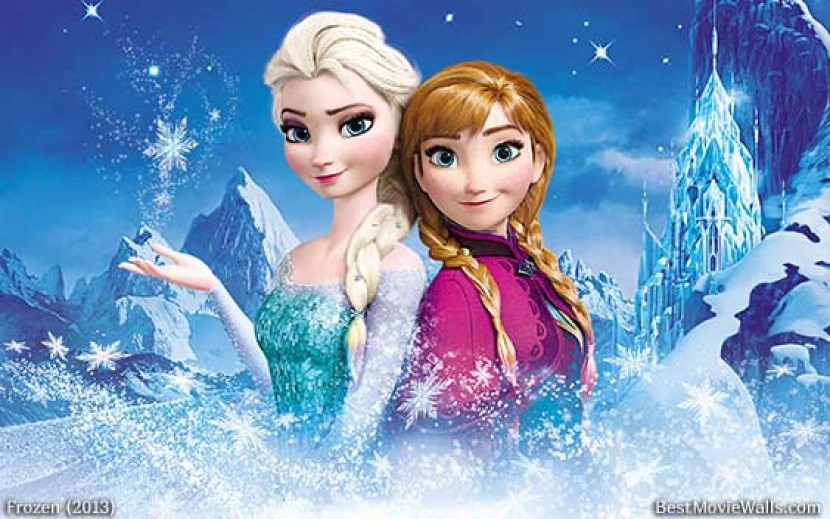
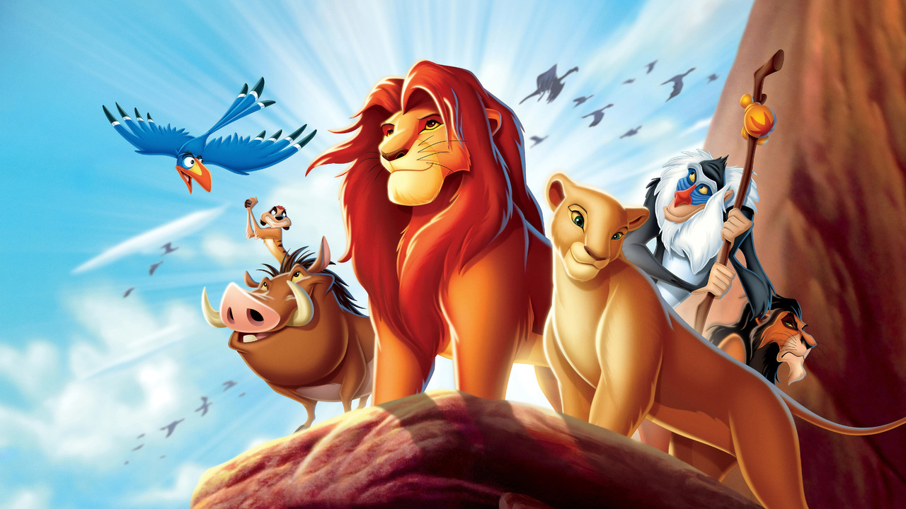
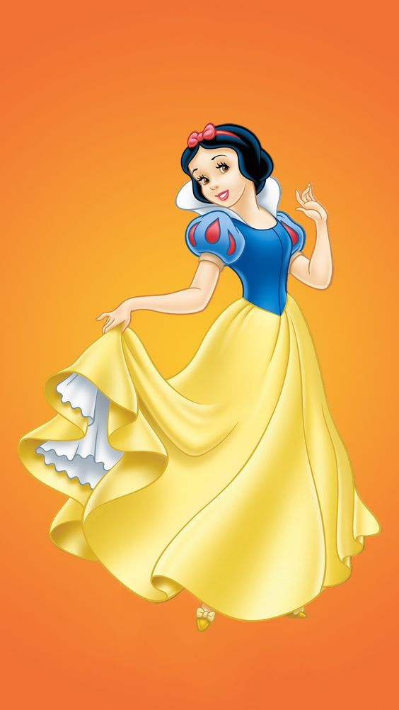
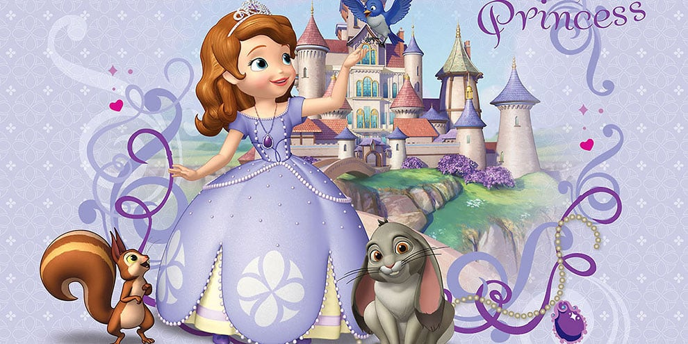
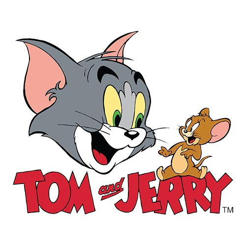

| Movie Name | Movie Poster | Description |
|---|---|---|
| The Shawshank Redemption |  | Frozen is a beloved Disney movie that takes us on a magical journey to the frozen kingdom of Arundel. The story follows two sisters, Elsa and Anna, who are torn apart by Elsa's uncontrollable powers to create ice and snow. As Elsa unwittingly plunges the kingdom into eternal winter, Anna embarks on a dangerous adventure to find her sister and save Arundel. Frozen is not only a visually stunning film but also explores themes of love, acceptance and the strength of family bonds. |
| The Dark Knight |  | The Lion King is a timeless animated film that tells the coming of age story of Simba, a lion cub destined to become king of the Pride Lands. After the tragic death of his father Mufasa, Simba must navigate treacherous challenges and reclaim his rightful place as king. With breathtaking animation, unforgettable songs and a compelling story, The Lion King is a heartwarming tale of love, loss and self-discovery. |
| Pulp Fiction |  | Snow White is a classic fairy tale brought to life in a captivating animated film. The story revolves around a young princess named Snow White, who is forced to run away from her evil stepmother, the queen. She seeks refuge in the forest and befriends seven lovable dwarves. When the queen is consumed by jealousy, she turns to dark magic in her quest to be the most beautiful of them all. Snow White is a timeless story that teaches important lessons about inner beauty, kindness and the triumph of good over evil. |
| The Shawshank Redemption |  | Sofia is a charming animated film that revolves around the life of a young princess named Sofia. When her mother marries the king, Sofia becomes part of the royal family and adjusts to her new role as a princess. During the film, Sofia learns important lessons about friendship, loyalty and the importance of staying true to herself. With its magical storyline and beautiful animation, Sophia is a delightful film for audiences of all ages |
| Tom and Jerry |  | Tom and Jerry is a beloved animated series that follows the hilarious antics of a mischievous cat named Tom and a clever mouse named Jerry. The duo have a constant battle of wits, resulting in countless comedic scenarios. Their slapstick humor and never-ending chase have been entertaining audiences for decades. Tom and Jerry show the power of friendship and remind us that even the most unlikely bonds can be formed in the most unlikely circumstances. |